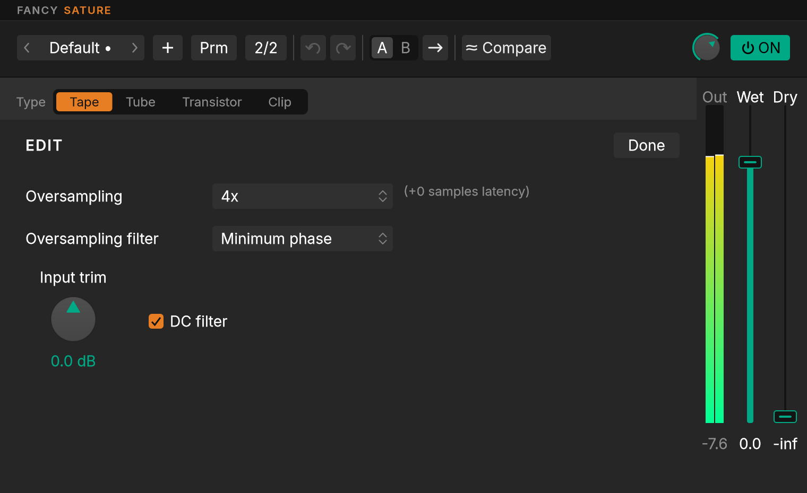

docs/sature.md, Phase 4 Wave 2: outer-band drive, Decision 3 A. New things in dashed yellow, on the plugin's real screenshot (1x coordinates).
1 · The EDIT drawer: an OUTER BANDS group
Beside Input trim and DC filter: Drive (0 to 36 dB, 0 by default) and Mix (0 to 100 %, 100 % by default) for the band below Low and the band above High, as small knobs. They share the mid band's Type, Character, Tone and Tape HF loss (Decision 1 A).

OUTER BANDS
Below Low
Above High
Type, Character, Tone and Tape HF loss are the mid band's.
Both Drives at 0 (the default) don't run the outer paths: today's sound to the bit. Auto gain covers the outer bands too. With High at Off there's no band above it, so High's pair dims.
2 · The main window: the BAND card shades while an outer band is driven
There's no band graph on the main window, so the BAND card takes a light orange tint and a one-line caption naming the driven bands while either outer Drive is up.

low band +6.0 dB
Nothing moves; the tint and caption go when both Drives are back at 0.